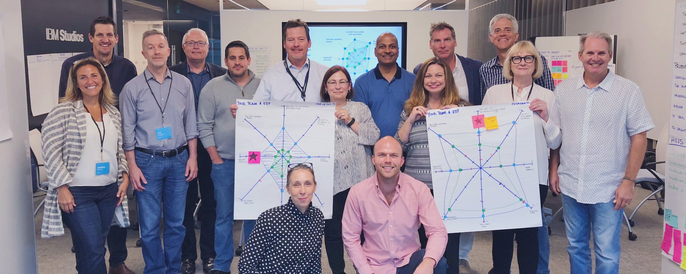
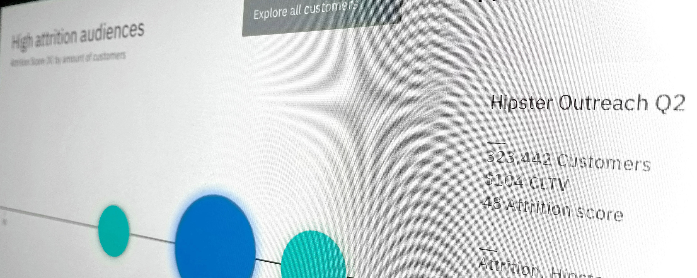

Click a thumbnail to open it. Escape, the close button, or a click on the scrim all dismiss it. While open, focus is trapped in the dialog, the page behind is inert, and it can't scroll — try tabbing or scrolling with it open.

